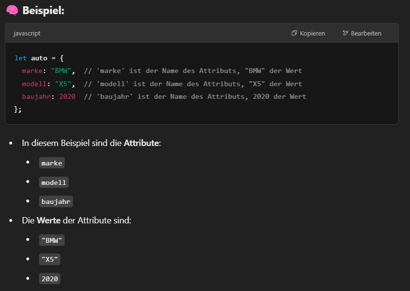
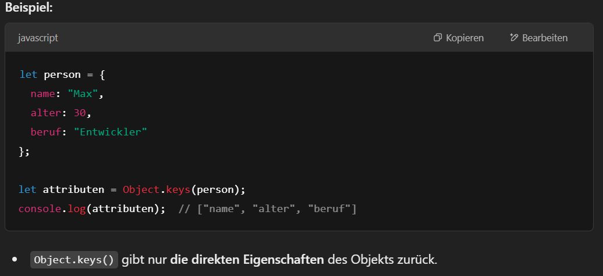
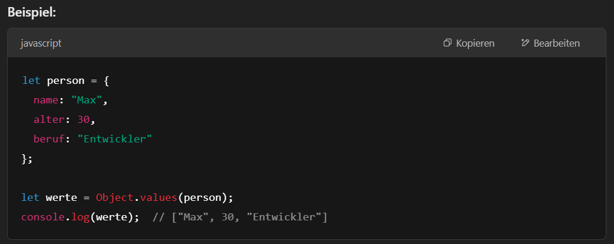

Ein Object ist eine Sammlung von Eigenschaften und deren Zugehörigen Werte.
Diese Eigenschaften und Werte sind Paare, die zusammen ein bestimmtes Merkmal oder Verhalten eines Objekts
beschreiben.
Ein Objekt besteht aus einer Reihe von Schlüssel-Wert-Paaren, die durch ein Komma getrennt sind. Die
Schlüssel
(oder Keys) sind immer Strings (es sei denn, sie sind explizit als Symbol deklariert), während die Werte
beliebige
JavaScript-Datentypen sein können, wie Zahlen, Strings, Arrays, andere Objekte oder sogar Funktionen.
In JavaScript kannst du ein Objekt auf mehrere Arten erstellen. Die einfachste und am häufigsten genutzte
Methode
ist mit geschweiften Klammern {}.

In JavaScript bezeichnet man die Eigenschaften eines Objekts als Attribute.
Attribute (Eigenschaften): Beschreiben den Zustand eines Objekts.
Ein Attribut muss nicht immer nur statisch ein Wert sein. Du kannst in einem Objekt auch berechnete Werte
speichern,
die dynamisch berechnet werden.

Zugriff auf Attribute mit:
In JavaScript kannst du alle Attribute (Eigenschaften) eines Objekts auflisten,
indem du entweder eine for...in-Schleife oder die Object.keys(), Object.values()
oder Object.entries() Methoden verwendest.
Mit der for...in Schleife kannst du durch alle enumerierbaren (aufzählbaren)
Eigenschaften eines Objekts iterieren, einschließlich der geerbten Eigenschaften.
Die Object.keys() Methode gibt ein Array mit den Schlüsseln (Eigenschaften) eines Objekts zurück.
Die Object.values() Methode gibt ein Array mit den Werten der Eigenschaften eines Objekts zurück.
Die Object.entries() Methode gibt ein Array von [Schlüssel, Wert]-Paaren zurück, d. h. ein Array von
Arrays, bei dem jedes innere Array ein Schlüssel-Wert-Paar repräsentiert.
In JavaScript kann in ein bestehendes mObjekt sehr einfach ein neues Attribut hinzugefügt werden: